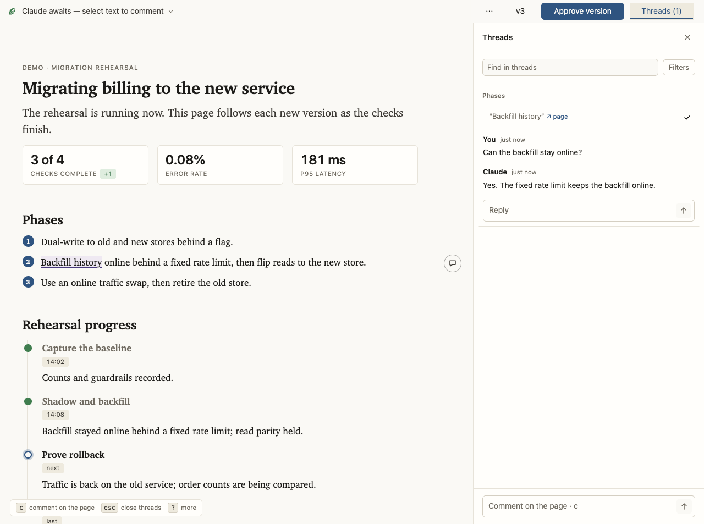
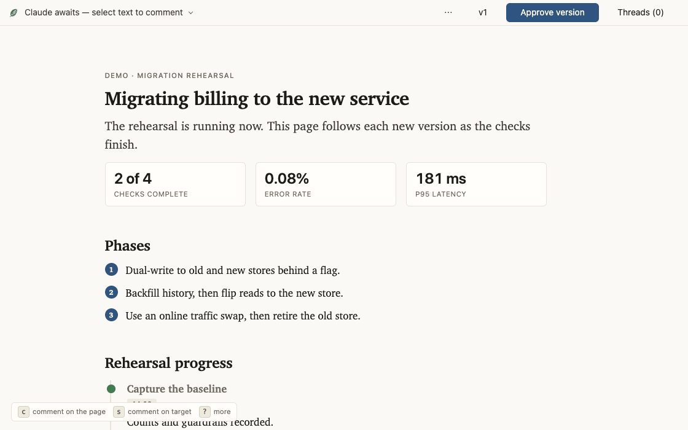

Generative UI for your agent.
Your agent builds you the page rather than a scroll of terminal text: options you press to decide, a board you drag, a dashboard that keeps up while the agent works. And when a page needs a widget that doesn't exist, it writes that too.
The pages are built from a vocabulary of widgets, with a messaging and
collaboration bus underneath: comments, drags, picks, and edits reach the
session as structured events, and revised versions come back with changelogs.
Two commands install it. No accounts, no daemon, no
config; you need uv on
your PATH and a browser on the same machine.

What a page can do
- Explain. Everything HTML has to offer, in place of everything a terminal doesn't: mermaid diagrams, a code walkthrough with remarks anchored at the line each is about, a unified diff, a file tree, two screenshots that flip between before and after, a row of measurements, evidence collapsed under the claim it backs, and real links out to the source line or the ticket. It prints, too.
- Collaborate. Ask about one part of the page rather than the whole of it. Every passage carries its own thread, so several conversations run at once and each stays anchored to the words it is about: yours and the agent's alike, since it opens threads on the page the same way you do.
- Interact. The page takes input back. Drag cards to re-prioritize a board, click an option to decide it, accept or reject a proposed edit, or rewrite a draft (an email, a release note) in your own words. Each edit reaches the agent as a structured action and holds its place on every later version. A question can be answered off its own menu too: a group that takes a pick carries a box for words, so "none of these — do X instead" goes where the question was asked.
- Track. A page can be a working dashboard rather than a document: the state of the resources you asked about, a queue draining, a checklist ticking over. The agent republishes as the work moves and your browser follows on its own, so you watch it happen rather than reading a summary afterwards.
- Grow. When a task calls for a widget that doesn't exist — say a call graph — the agent writes one: a schema, CSS, and a module if it needs behavior. It passes the same checks as the shipped widgets, and later pages in the project can use it.
The examples are complete pages, one per kind of work, published here as the browser draws them. How it works shows the widget system rendering live, and Customize covers the layer new widgets land in, whether the agent wrote them or you did.
Example: Review a plan
-
Ask. "Write up the migration options as a page" triggers
it, as does
/leafin Claude Code or$leafin Codex. The agent writes the page, serves it on a loopback port, and prints the URL. - Mark it up. Select any passage and comment; the passage stays lit while you write, and the comment anchors to it and stays anchored as versions change — to the passage you picked, even where the page says the same thing twice. Diagrams and images take comments by click, and a suggestion mode proposes replacement text that the agent takes verbatim or answers with why not. The agent opens threads the same way — a question about one sentence arrives in the margin beside it, not in the terminal.
-
Your comment reaches the session. On Claude Code, a
background
leaf waitwakes or joins the agent. On Codex, an opt-in watcher task can hold that wait and forward the transport-neutral batch into the page's task as a background follow-up; without one, the page's task keeps its own handover turn active. Either loop acknowledges only after a complete, untruncated batch has reached its next durable step, so "printed" cannot masquerade as "seen". - A revision ships. Versions are immutable, each with a one-line changelog. The page follows the newest while keeping your place on it, and any older version's Δ marks every passage that has changed since it — as far back as you were away.
-
Conclude deliberately. Pages seeking approval offer "✓
Looks good"; a page that only informs asks nothing and carries no such
control. Approval records assent and leaves the page live for follow-up, so
the work it unblocks goes on in front of you. After a complete batch is
received, an explicit idle state closes the agent loop when its work there
is finished.
leaf transcriptprints the whole thread as Markdown for a PR description.

scripts/record-demo.sh: comment on a
passage, watch a new version advance the work, then move a card.
Example: Re-prioritize a queue
The release-triage example hands the ordering to the user: drag “CSV export quotes numerics” from “Fix in 2.4.1” to “Blocking release”, and the page keeps it there. Nothing reads the move on that page. Run it from a checkout and an agent does:
scripts/preview.py triage-board{"widget":"release-board","action":"move","detail":{"card":"card-export",
"to":"col-blocking","index":2}}. The move appears immediately, reaches the agent as an action, and remains
on later versions.
Example: Watch work finish
The cutover-rehearsal example is a page the agent keeps current while it works. It names what is running now, marks the one blocked check and what it waits on, and records what has already finished. Run it like any other example:
scripts/preview.py live-progress- v4: 11 of 18 checks are done; traffic has just moved to the new checkout service.
- v5: 14 are done; rollback is running, so that milestone becomes active and the event timeline gains the cutover result.
- v6: rollback is done; the report becomes active and the browser follows the version without a reload.
The published example is the middle state, with metrics, milestones, a blocker, and an event log for the next version to update in place.
Install
Claude Code
/plugin marketplace add max-sixty/leaf
/plugin install leaf@leafCodex
codex plugin marketplace add max-sixty/leaf
codex plugin add leaf@leaf
Then ask the agent to "write it up as a page", run /leaf in
Claude Code, or run $leaf in Codex. The agent also reaches for it
on its own when a plan or write-up would be easier to review as a page than as
terminal text.